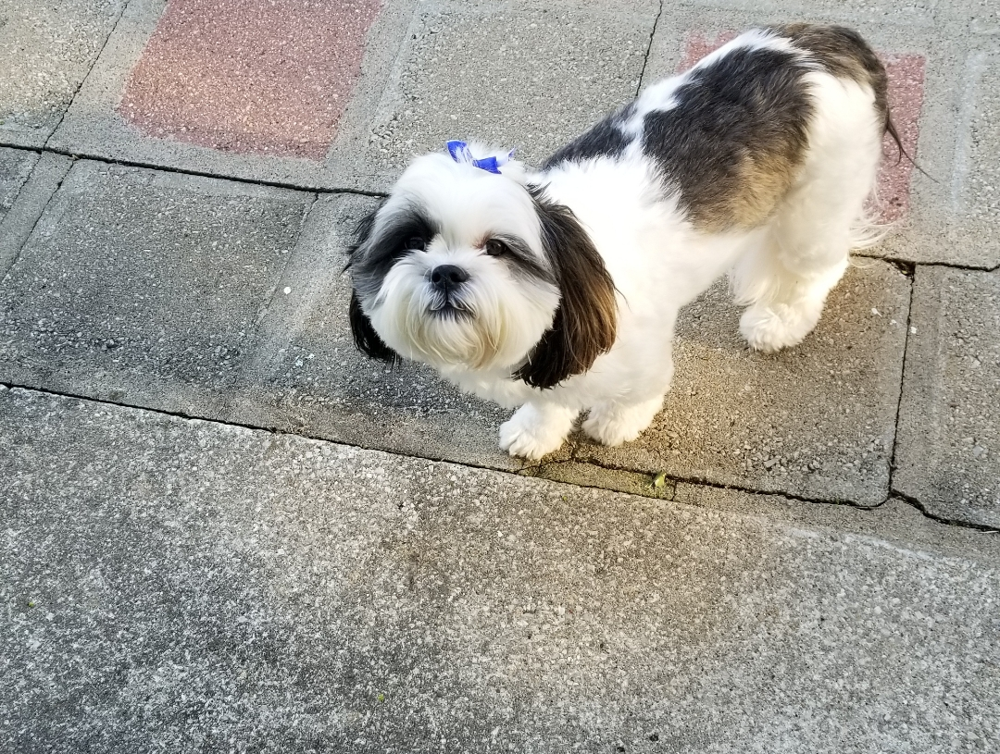

Welcome to Airi the Lhasa.
This website is dedicated to my Lhasa Apso, Airi. She is not only my companion and my baby, she also helps me through my bouts with depression and anxiety. As you may have guessed, she is a Lhasa Apso, a small-medium breed registered by the American Kennel Club. The easiest way of describing her breed is that she's a larger version of the Shih Tzu, though Lhasa Apsos originate from Tibet, not China.
